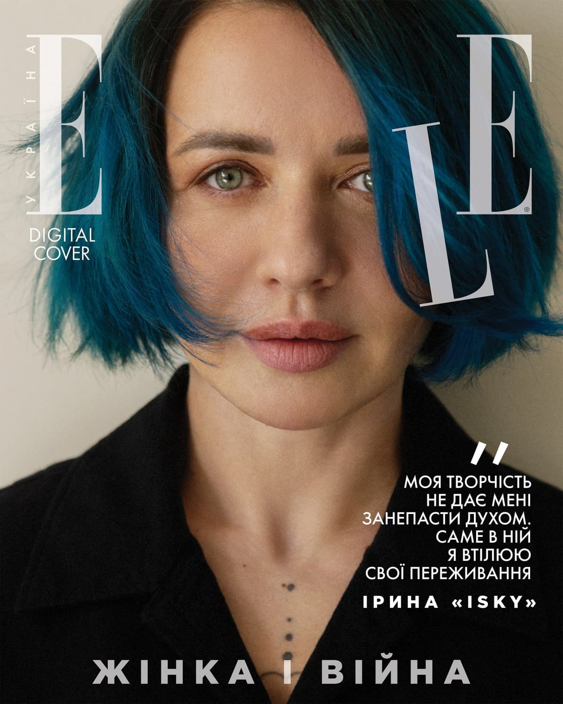
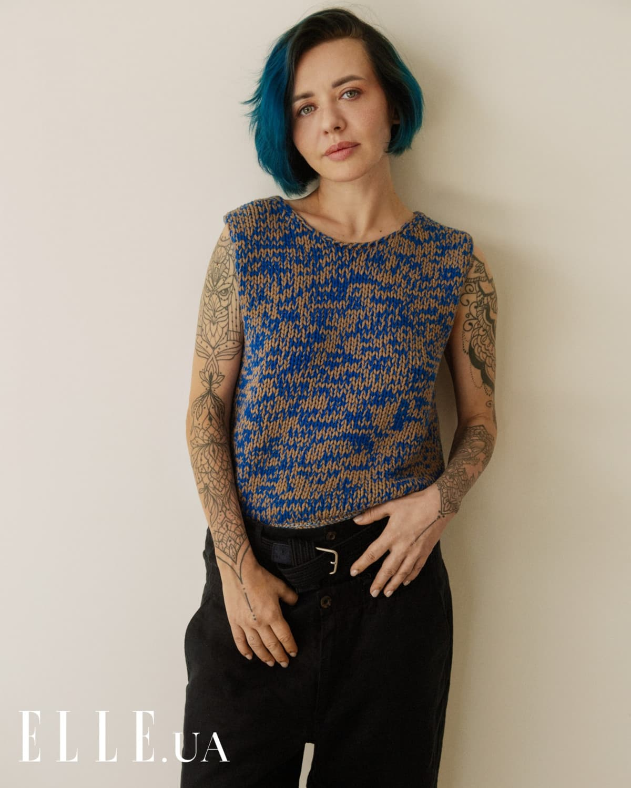
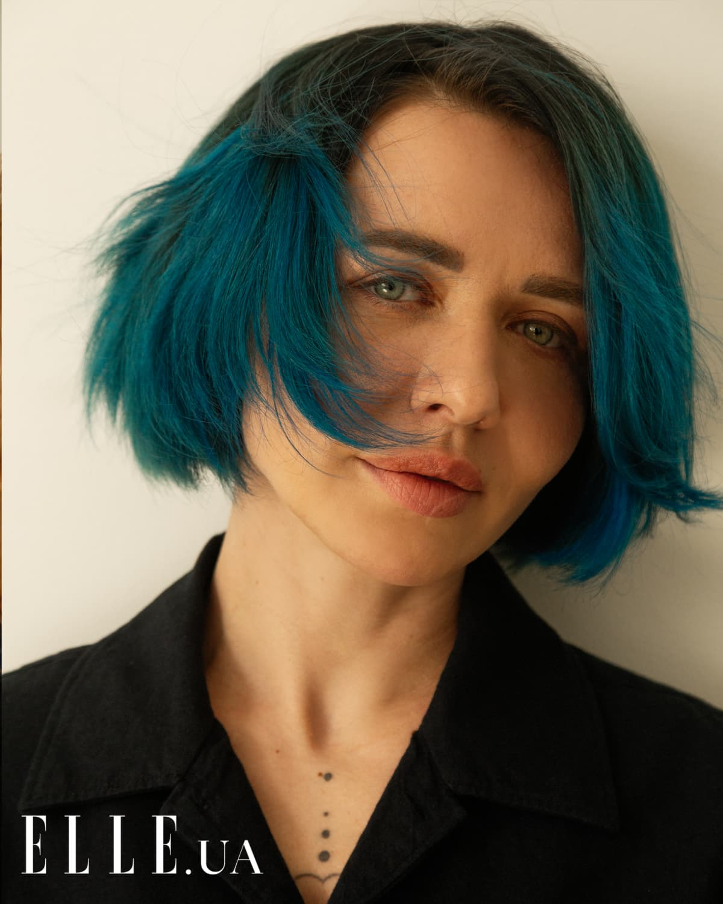
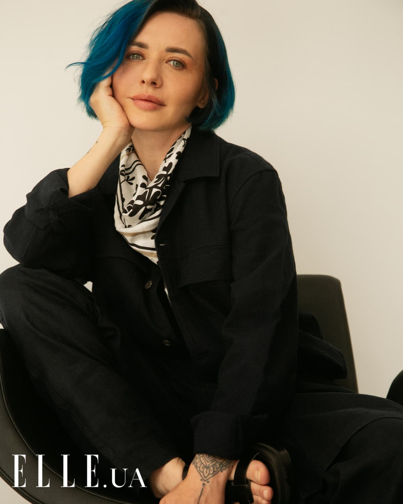
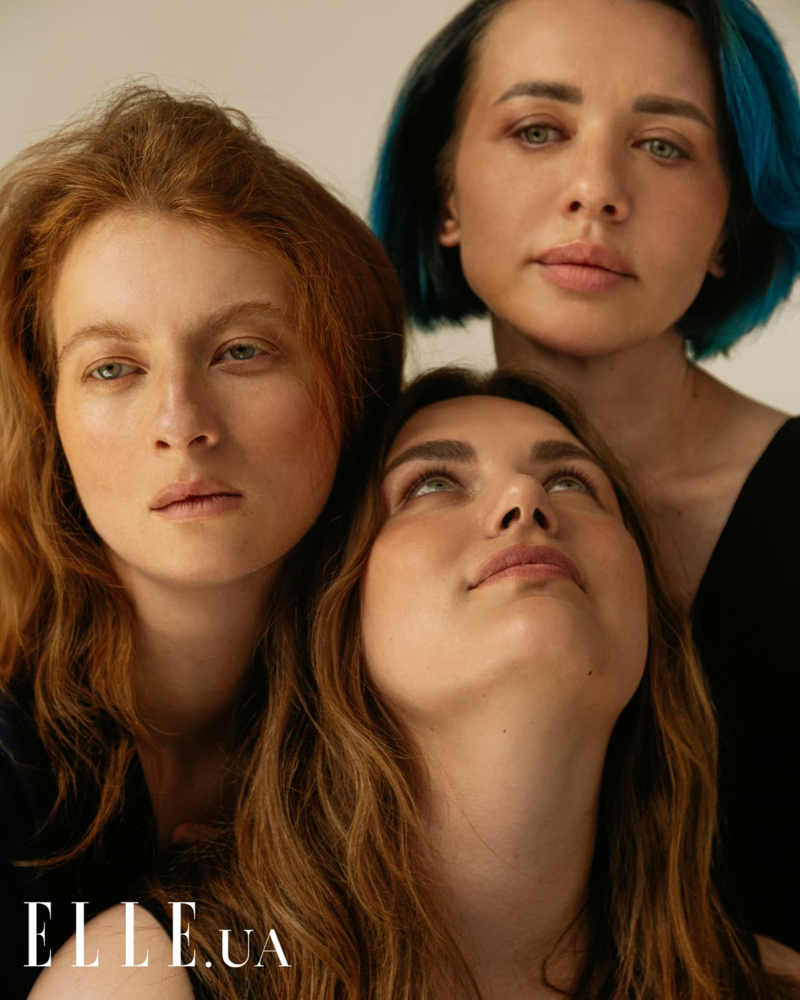

«ЖІНКА І ВІЙНА»: ІНТЕРВ'Ю З СОЛДАТОМ ТА ФОТОХУДОЖНИЦЕЮ ІРИНОЮ «ІSKY»
Солдат та фотохудожниця Ірина «ІSKY»
35 років. 1,5 року в
зоні бойових дій. Звання — УБД, солдат
Уже понад рік ЗСУ захищають свободу та незалежність України. У лавах Збройних сил України сьогодні багато жінок, які кожного дня доводять своїм прикладом, що для української жінки немає перешкод: так було, так є і так буде.
Про службу під час війни, внутрішню боротьбу, мрії та любов до України нам розповіли три жінки-військові. Чесні, щирі, незламні, вони руйнують усі гендерні стереотипи. Їхні життєві історії різні й дуже схожі водночас. І кожна з них демонструє неймовірну силу та надлюдські зусилля жінки на війні.
Про службу під час повномасштабної війни
Хто така Ірина «іSky»? Як ви можете описати себе сьогодні?
Я — жива людина, яка щодня стикається зі смертю, але живе далі.
Як ви прийняли рішення піти на війну?
Рішення було прийнято швидко і, як мені на той час здавалось, усвідомлено.
Зараз стає все більше жінок, які обирають військові спеціальності. Як це — бути жінкою на фронті?
Бути жінкою на фронті для мене — це переконати все оточення в тому, що ти прийняла рішення. Це стикатися з протистоянням, а не підтримкою твоїх близьких, друзів, які вмовляють тебе не йти. Це робити манікюр зламаною пилкою в машині, коли все навколо дрижить, а в тебе просто немає іншого часу. Бути жінкою на фронті — це плакати так, щоб ніхто не бачив, відчувати емоції, яких ти раніше ніколи не відчувала, переживати моменти, коли гроші не мають вже цінності, коли цінність має лише людське ставлення, лише щирі людські посмішки. Бути жінкою на фронті — це бути митцем, бо це твоя ниточка до нормального життя, і ти всіма силами намагаєшся не втратити її. Це кожен день сприймати як останній і кожного дня говорити слова любові коханій людині та своєму сину. Це вірити в Перемогу, втрачати близьких, відчувати щиру підтримку і любов. Це дуже великий спектр емоцій та почуттів, які неможливо описати.
Що найскладніше у вашій службі?
Найскладніше в моїй роботі — щодня налаштовуватися на позитивні емоції, адже ми працюємо з різними підрозділами, фільмуємо їхню роботу, а також проводимо психологічні інтерв`ю, які розряджають наших військових і дають їм надію на майбутнє. І найтяжче — це кожного разу після того, як ти бачиш їхні посмішки й одночасно очі, повні сліз, переварювати це все і налаштовуватися на приємні емоції, адже ми повинні заряджати бійців енергією, витягувати з тієї емоційної ями, в якій вони перебувають. І дуже приємно бачити, як вони починають мріяти й навіть будувати плани. Як би тяжко мені не було зібрати себе до купи, але, коли я задаю собі запитання, для чого я це роблю, сили одразу з`являються.
Як ви вважаєте, яка роль жінок у майбутній відбудові країни?
Уся моя творчість присвячена жінкам. Для мене жінки — нескінченний потік енергії та натхнення. Жінки — це просто неймовірні творіння, вони постійно борються за свої права, і я впевнена, що в найближчому майбутньому жінка матиме такі ж права і привілеї, як і чоловіки. Жінка — це фундамент, і все починається з фундаменту.
У чому полягатиме головна зміна суспільства після нашої перемоги?
Я думаю, що після нашої Перемоги та виходу на кордони 1991 року наше суспільство просто не дозволить повернутися корупції, старим установкам і старій системі. Молоде покоління звикло діяти, і тут, в зоні бойових дій, люди жертвують своїм життям заради того, щоб наше суспільство змінилося. Українці — дуже розумна і мудра нація, ми вже не віримо ніяким побрехенькам і не ведемось на пропаганду, ми стали більш свідомими через війну. Кажуть, для того, щоб дерево почало родити, в нього потрібно забити цвях, і так виходить, що війна — це той цвях, який в нас забили, але ми обов`язково виживемо та розквітнемо. Я вірю в це. І багато військових, які зараз в зоні бойових дій, говорять про нове суспільство. Ми йдемо тільки вперед, до кращого, і так і буде.
Про пошуки натхнення та боротьбу зі стресом
Як війна змінила ваше відчуття краси та жіночності?
Від початку повномасштабного вторгнення ми їздили працювати в зону бойових дій, і коли ти навколо бачиш лише одну розруху, страх і біль, то намагаєшся шукати все, що нагадує про красу і жіночність. І я зрозуміла, що краса — це не про матеріальні речі. Для мене сприйняття жіночності та краси змістилося у бік духовності. Жіноча енергія проявляється в посмішці, погляді, жестах, лінії пальців. Я стала дуже часто згадувати, які правильні посилання саме про жіночу енергію містить українська народна творчість. В українських казках є такий персонаж, як дідова дочка, яка не чекала на принца, не чекала допомоги зі сторони, вона сама проходила через усі випробування завдяки своїй доброті та жіночності й сама виборювала право на щасливе життя. Українська казка показує, що жінка є самодостатньою, красивою і цільною особистістю. І от зараз я ще більше переконуюсь, що жіночність і краса не в матеріальних цінностях чи зовнішньому вигляді, а саме в енергії.
Що не дає вам упасти духом?
Мені не дає впасти духом (хоча я іноді й падаю) моя творчість, адже саме у ній я втілюю свої переживання. Я розповідаю людям про жінок — це для мене та ниточка, яка допомагає не зійти з розуму. Тому кожного разу, коли мені дуже страшно або боляче, я йду працювати над картиною, і це рятує мене, бо я втілюю свої думки й емоції у своїх творах.
Чи важко було вам звикати до певного обмеження свободи та до того, що ви маєте виконувати накази?
Я дуже добре пам`ятаю той момент, коли на початку служби усвідомила, що більше не керую своїм життям, не можу приймати рішення самостійно, щось планувати, і мене охопив величезний страх — аж до паніки, але потім я просто кожного дня показувала, на що я здатна і що можу виконувати свою роботу добре. Я дуже вдячна своєму командиру, що він побачив це і дає мені можливість робити те, що я вмію, і це приносить максимальну користь. Деякі моменти даються мені тяжко, як і будь-якому військовому, який знаходиться в зоні бойових дій, але, оскільки я бачу, що я на своєму місці й командування мені довіряє, я стараюсь робити все більше і більше, адже розумію, наскільки це важливо.
Де ви черпаєте силу для допомоги іншим і як ви відновлюєтеся?
По-перше, моя сила в тому, що ми з чоловіком разом працюємо, живемо і служимо. Ми 24/7 разом — це і є моя підтримка. Також мені дуже допомагає моя творчість — моя ниточка до адекватного життя. І звісно, також мій син, я пишаюсь ним і щодня, коли ми спілкуємось, розумію, що це зовсім нове покоління: усвідомлене, з правильними цінностями, не по роках доросле. Я вдячна за те, що я усе це маю, і я щаслива завдяки їм.
Про долю України
Що для вас означає Україна та бути українкою?
У мене є картина з виставки «333», яка називається «Україна», і там зображена Україна в образі жінки. Багато хто каже, що вона страшна, занадто мужня, занадто велична, але нас зараз так і сприймають інші люди, бо наша держава виборює свободу неймовірними зусиллями. Україна — сильна, вольова, неймовірно красива і потужна. Так, вона не для всіх, але сильні люди не всім подобаються: часто їх бояться, проте для мене бути українкою — це бути в першу чергу вільною, бути такою ж, як і є сама Україна.
Хто вас надихає? Чому?
Мене абсолютно і беззаперечно завжди надихали та надихають досі жінки: історичні особистості, художниці, політикині й ті ж самі релігійні особистості. А особливо мене надихають українські жінки, тому що я спілкувалася з дуже багатьма жінками в зоні бойових дій і на деокупованих територіях, і дуже багато з них мене надихнули на нову виставку, над якою я зараз працюю.
Що б ви порадили українським жінкам?
Я порадила б їм не забувати, що вони українки, що бути українкою означає бути самодостатньою, свідомою, красивою. В кожній українській жінці поєднане непоєднуване, адже розум, мудрість і краса є в кожній українській жінці, і я дуже пишаюсь тим, що я українка, пишаюсь українськими жінками й дякую за те, що вони є.
Опишіть, яким ви бачите майбутнє країни.
Знаєте, що спільного в Лої Фуллер, Коко Шанель і Фріди Кало? Усі вони були
трендсетерками свого часу, кожна з них унікальна і неймовірно красива, але жодна не вписувалась у сталий
алгоритм тогочасного суспільства. Проте вони перевернули з ніг на голову свідомість людей, і увесь світ
підкорився їм!
Майбутнє України очевидно для мене — це трендсетер нової ери, це держава, що вже має
беззаперечну повагу всього цивілізаційного світу. Ми всі вже на порозі нового майбутнього і зараз долаємо
останні перешкоди на
шляху до великого успіху.
Проте потрібно завжди памʼятати, що у нас є сусід, який завжди буде заздрити та
шкодити нам і не припинить
псувати нам життя, доки не зникне…
Про мрії та плани
Як змінилися ваші пріоритети та бажання після повномасштабного вторгнення РФ?
Під час повномасштабного вторгнення РФ в Україну я відмовилась від звання амбасадора компанії Nikon. Я дуже довго за нього боролася, це було непросто, тому що по всьому світу були амбасадори цього бренду, але, оскільки вони розгорнули великий офіс в Росії та відмовилися допомагати Україні, я принципово вирішила зупинити співпрацю та відхрестилася від цього статусу, адже я зрозуміла, що для мене важлива моя країна та люди, які проживають тут, які борються за свободу. А ще я зрозуміла, що все одно зможу досягти будь-чого.
Що б ви сказали собі рік тому?
Рік тому я б сказала собі не жертвувати собою, тому що немає нічого важливішого, ніж ти сам, адже, якщо кожен з нас не буде дбати про свою внутрішню маленьку дитинку, ніхто інший не подбає про неї. Я б себе обійняла і сказала: «Тримайся, тебе чекає складний, але великий шлях».
Про що ви мрієте сьогодні?
Я живу одним днем, проте мрію, щоб мій син став щасливою, вільною людиною і жив у вільній країні. Я дуже хочу, щоб ми вибороли свою свободу і зрозуміли одну важливу річ: треба цінувати себе і цінувати те, що ми маємо зараз, а ще — не боятись мріяти. Я дуже хочу, щоб скінчилися ці дні, коли ти нічого не плануєш. Я мрію просто мріяти.
